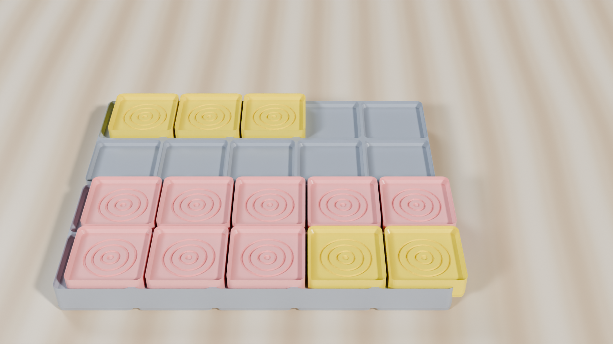

Ten-Frames Classroom Lessons
Transition children from tedious one-by-one counting to instantaneous perceptual subitizing and spatial base-10 mental arithmetic.
Classroom Demonstration Video: Lessons 1 & 2
Watch counters drop into 2×5 sockets to build numbers and slide to the carry shelf during addition.
Why Subitizing Unlocks Mental Math
Children who count on their fingers struggle when entering multi-digit addition because working memory is consumed by counting ticks. The 2×5 array teaches the brain to see "7" as "a group of 5 and 2 more" in under 200 milliseconds.
Instant Subitizing: Recognizing 7 as 5 + 2
Lesson Objective: Students identify quantities from 1 to 10 immediately without counting individual counters one-by-one, using the benchmark of 5.
Step-by-Step Classroom Investigation
Δ Key Misconception Diagnostic: "The Persistent Finger Counter"
The Common Error: When shown a frame with 6 counters, the child still touches each token: "1, 2, 3, 4, 5, 6."
The Physical Fix: Cover the top row with a flashcard. Ask: "You know the top row has 5. What is 1 more than 5?" Repeat with 2 more (7) and 3 more (8) until the child anchors their mental count directly from 5.
✓ Independent Transfer Check
Prompt: Show the child a ten-frame with 8 counters for exactly 2 seconds, then cover it. Ask: "How many counters did you see?" Expected explanation: "I saw 5 on top and 3 on the bottom, which is 8."
The Make-Ten Strategy & Regrouping: 8 + 5 = 13
Lesson Objective: Solve addition problems that bridge 10 by physically moving counters to complete a ten, then transferring the bundle to the carry shelf.

Step-by-Step Classroom Investigation
Δ Key Misconception Diagnostic: "Lost Carried Tens"
The Common Error: During written column addition, students write down 13 under the units column or forget to add the carried ten.
The Physical Fix: The elevated shelf gives "carrying" a literal vertical elevation. The student physically moves their arm up to place the token on the shelf, creating an embodied spatial memory of place-value regrouping.
✓ Independent Transfer Check
Prompt: Solve \(7 + 6\) using the make-ten strategy. First state how many counters are needed to make 10, then how many remain, and show the final result on the dual-tier tray.
Pre-Generated Ten-Frame Worksheets & Standards
The Ten-Frames Studio pairs directly with our 120-edition library of publication-grade, 2-page classroom station guides. Designed for early numeracy rotations, each guide features CAD diagrams, authentic drawing workspaces, and 4-tier teacher scoring rubrics.